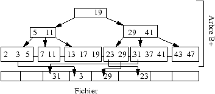

3 Indexation (6 points)
Opérations sur arbre B+ (2 pts)

Figure 1 : Un arbre B+
Soit l'arbre B+ d'ordre 2 de la figure 1. Expliquez les
opérations suivantes, et donnez l'arbre final après chaque opération.
-
Recherche de l'article 41.
- Recherche des articles 20 à 30.
- Insertion des articles 1 puis 4.
- Destruction de l'article 23.
Index dense et non-dense (2 pts)
Soit un fichier tel que
chaque page peut contenir 10 articles. On indexe
ce fichier avec un niveau d'index (un seul), et on suppose
qu'une page d'index contient 100 paires (clé, pointeur).
Si n est le nombre
d'articles, donnez la fonction de n
permettant d'obtenir le nombre minimum de pages pour
les structures suivantes :
-
Fichier séquentiel non ordonné avec un index dense.
- Fichier trié sur la clé avec un index non-dense.
(1) n/10 et n/100, soit 11 × n/100 pages.
(2) Il faut seulement n/10 paires (clé, pointeur) dans l'index,
donc n/1000 pages, pour un total de 101× n/1000 pages.
Arbre-B (2 pts + 2 bonus)
On reprend les hypothèses précédentes, et on indexe
maintenant le fichier avec un arbre B+. Les feuilles de l'arbre
contiennent donc des pointeurs vers le fichier, et les noeuds internes
des pointeurs vers d'autres noeuds (voir figure 1).
On suppose qu'une page
d'arbre B+ est pleine à 70 % (69 clés, 70 pointeurs).
-
Le fichier est trié sur la clé, et indexé
par un arbre-B+ dense. Donnez (1) le nombre
de niveaux de l'arbre pour un fichier de 1 000 000 articles, (2) le nombre de
pages utilisées (y compris l'index), et (3) le nombre
d'accès disque pour rechercher un article par sa clé.
Il y a 100 000 pages de données. Un million
d'articles, donc 1M/70 = 14 286 pages pour le dernier
niveau de l'arbre B+. On divise encore par 70 :
204 pages au niveau l-1, 3 pages au niveau supérieur, et 1 page
pour la racine.
Il faut donc lire 4+1 pages pour accéder à un article
par sa clé.
- On effectue maintenant une recherche par intervalle
ramenant 1 000 articles. Décrivez
la recherche et donnez le nombre d'accès
disque dans le pire des cas.
Recherche sur le plus petit élément (4 pages), puis lecture de
1000/70 = 14 pages
en suivant le niveau des feuilles de l'arbre B+. Pour chaque pointeur
vers un objet il faut lire une page dans le pire des cas, soit
1 000 pages. Total : 1018 pages.